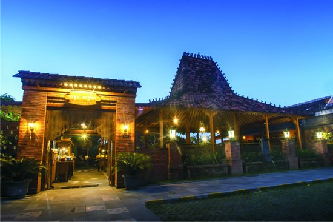

Destination
Museum Karst
Pantai Nampu
Bukit Cumbri
Telaga Claket
Pantai Sembukan
Air Terjun Girimanik
Goa Putri Kencono
Jurug Kemukus
Pantai Dadapan
Pantai Kwaru Gunturharjo Paranggupito
Kuliner

Angrkingan Sopo Ngrio Wonogiri
Warung Makan Pak Glinding
Bakso Titoti
Pondok Makan Tebing Grenjengan
Angkringan Griyo Aji Somo Wonogiri
Pondok Makan Moro Seneng Tenan
Rumah Makan Sari Raras